企业报表平台 · 帮助文档 v1.0
把「会用数据库的人」和「要看数据的人」连起来——开发者配置数据源、写 SQL 做成报表；甲方打开链接就能查数、导出，也可以用自然语言让 AI 生成新报表。全程只读、按应用隔离。
1平台是什么
👨💻 开发者（/d）
- 配置只读数据源，自动生成数据库结构文档
- 手写 SQL 或让 AI 生成 SQL，一键发布报表
- 决定甲方能否看到 SQL 与表结构说明
- 接收甲方需求，完成后回填报表通知甲方
🧑💼 甲方（/c）
- 点开报表立即自动运行——仅当开发者定义了参数（
{{名称}}占位符）时才需填参数后点「查询」 - 「全部」分页浏览全量数据，导出 xlsx / csv
- 用自然语言生成新报表并保存常用
- 自己配 AI 模型（与开发者互不干扰）
2三十秒上手
| 你是谁 | 入口 | 能做什么 |
|---|---|---|
| 开发者 | http://localhost:3111/platform/d | 配数据源、写 / 生成 SQL、发布报表、处理甲方需求 |
| 甲方 | http://localhost:3111/platform/c | 查报表、翻全量数据、导出文件、自然语言生成新报表 |
路径规则：/{应用路径}/d 开发者端、/{应用路径}/c 甲方端。根路径 / 自动跳转平台根的开发者端。
🎬 甲方端完整操作演示（约 40 秒）
查看报表 → 「全部」分页浏览 → 翻页/退出 → 生成新报表入口 → 模型配置
3开发者端（/d）
3.1 数据源
- 填 名称 / 数据库域名 / 端口 / 库名 / 用户名 / 密码 后「新建」；域名默认
localhost、端口默认3306。 - 务必使用只读账号（仅 SELECT）。平台会验收：测试连接后 INSERT 必须失败才算合格。
- 同一应用内连接信息完全相同的数据源会被自动去重（409 提示）。
- 删除被报表引用的数据源时不会直接删：选择同应用的其他数据源「改派并删除」，事务内完成改派，避免悬空引用。
- 数据源按应用隔离：A 应用的数据源只能给 A 用，跨应用绑定返回 403。
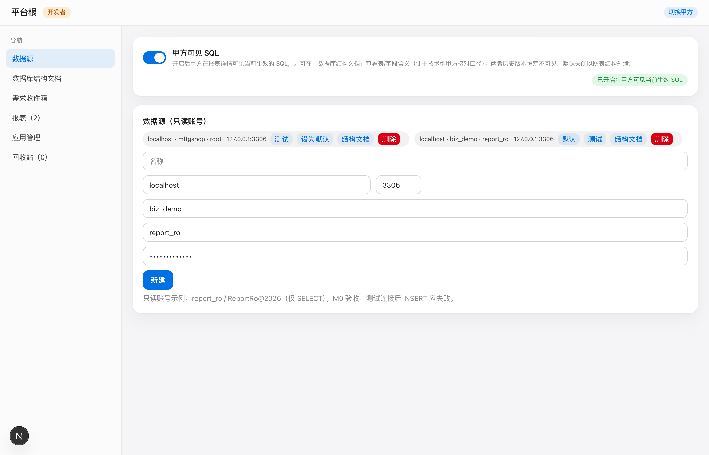
数据源页：顶部「甲方可见 SQL」开关 · 数据源列表（测试 / 设为默认 / 结构文档 / 删除）· 新建表单
3.2 「甲方可见 SQL」开关
| 状态 | 效果 |
|---|---|
| 关闭（默认） | 甲方看不到 SQL，也看不到「数据库结构文档」；甲方端按钮显示「生成报表」 |
| 开启 | 甲方在报表详情可见当前生效的 SQL，可查看表 / 字段含义，便于技术型甲方核对口径 |
只对当前生效版本生效，历史版本永远不可见——既方便核对口径，又不泄露演变过程。
3.3 数据库结构文档
自动读取库中的表、字段、注释、索引并生成文档；结果列的表头含义优先使用列注释的第一行（无注释则回落到列名）。甲方端表格表头的中文含义同样来自这里。
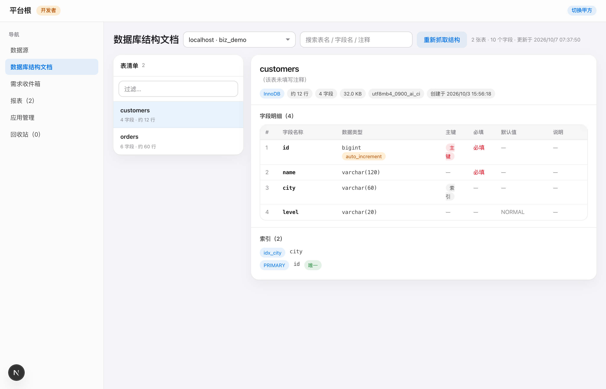
数据库结构文档：按表展示字段、类型、注释与索引
3.4 报表（写 SQL 建报表）
- 展开「新建报表（直接写 SQL）」，填报表名称、选数据源；
- 写 SELECT，参数用
{{名称}}占位（仅可出现在值的位置）； - 「预览（≤200 行）」确认数据无误后「保存为报表」，甲方端立即可见；
- 点开已有报表可修改 SQL，保存会新增不可变版本（旧版本保留可追溯）。
SELECT region, COUNT(*) AS cnt, SUM(amount) AS total
FROM orders
WHERE status = {{status}}
GROUP BY region
ORDER BY total DESC预览 0 行 ≠ 出错：SQL 已跑通，只是没匹配数据。常见原因：字段存的是编码（如 status=1）而不是中文、时间范围不覆盖、选错数据源。
📎 带参数报表的完整示例（定义 + 填写）见 第 5 节。
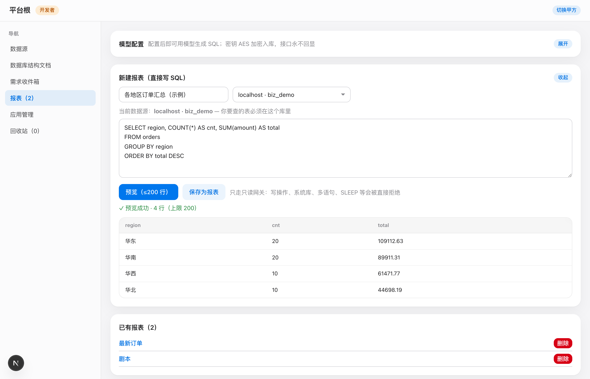
新建报表：写 SQL → 预览结果（表头自动带列注释）→ 保存为报表
3.5 模型配置
- 内联在「报表」「需求收件箱」顶部，用到模型的地方就近配置；
- 内置 15 家主流厂商预设，也支持本地模型（OpenAI 兼容协议）；
- 密钥 AES 加密入库，接口永不回显；可设默认、测试连接、启停、删除；
- 开发者与甲方的模型完全独立：各自配置、各自的 key、各自的默认。
3.6 需求收件箱
甲方没配模型时点「生成报表」，需求描述会自动出现在这里。每条需求可「据此生成 SQL」：
- 补充需求描述 → 选数据源、选模型 → 生成 SQL（生成中可「停止生成」中断后端调用，或「仅取消等待」只停前端等待）；
- 多个库都能满足时列出候选，选定一个库的 SQL；
- 预览 →「保存为报表并通知甲方」，需求自动标记完成并回填报表。
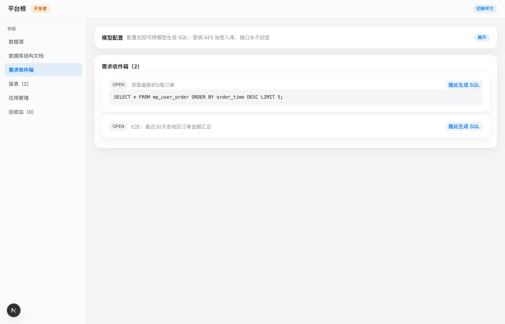
需求收件箱：甲方提交的需求会出现在这里，可一键据此生成 SQL
3.7 回收站与应用管理
- 回收站：开发者自己的回收站，与甲方互不干扰，删除的报表可一键还原；
- 应用管理（仅平台根账号可见）：新建应用（名称 + 路径前缀，路径重复 409）、停用 / 启用、删除（级联清理应用下全部数据）；平台根应用不可删除；
- 停用后最多 60 秒全站生效，访问者会看到「该应用已停用」的友好提示而不是空白页。
4甲方端（/c）
4.1 我的报表：查看 / 全部 / 导出
- 开发者发布的报表 + 你自己保存的报表都在这里，点「查看」立即自动运行，无需任何额外操作；
- 仅当开发者在 SQL 里定义了参数（
{{名称}}占位符）时，才会出现参数输入框，填好后点「查询」（完整示例见 第 5 节）； - 全部：想看全量数据时点「全部」，进入分页浏览（每页 20 / 50 / 100 / 200 行），「退出全部」回到预览。
- 导出 xlsx / csv：后台异步导出，完成后自动下载；导出期间按钮显示「导出中…」并锁定，不会重复下载。
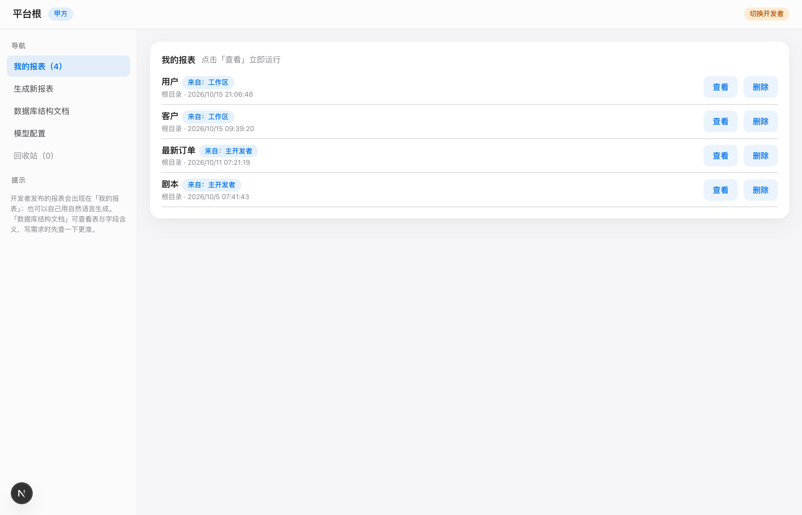
甲方首页：所有开发者发布的报表汇总在此，点「查看」立即运行
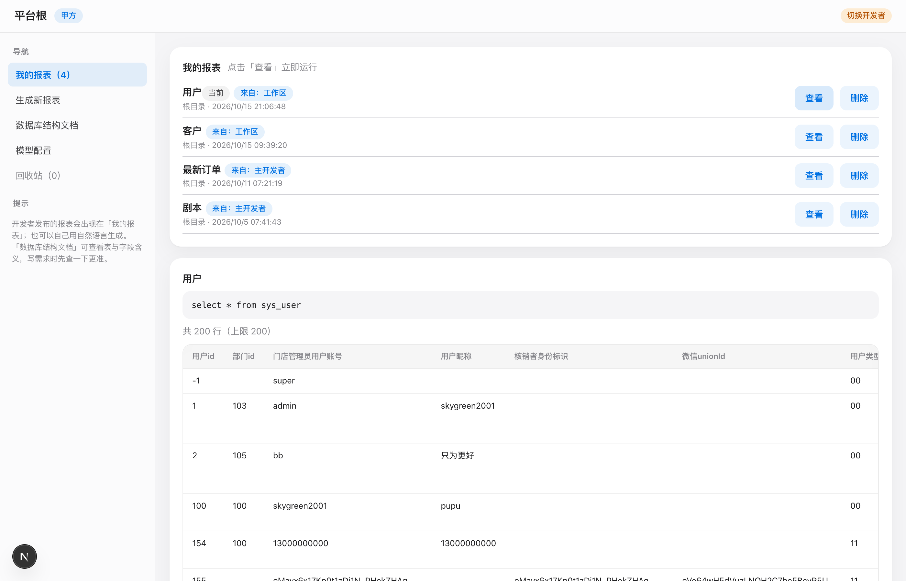
报表详情：生效 SQL（若开发者开启可见）· 参数查询 · 结果表（表头带列注释）· 全部 / 导出
4.2 生成新报表
- 用自然语言描述需求（例：「最近30天各地区的订单金额汇总，按金额降序」）；
- 选模型（你自己的模型配置，与开发者无关）→ 点「生成 SQL」；
- 平台自动读库表结构 → 生成 SQL → 校验表名字段；
- 「预览」确认后「保存为常用报表」，以后在「我的报表」一键运行；
- 生成不理想可「求助开发者」，需求直达开发者收件箱。
没配模型也能用：点「生成报表」会把需求提交给开发者，由开发者完成后回填给你。
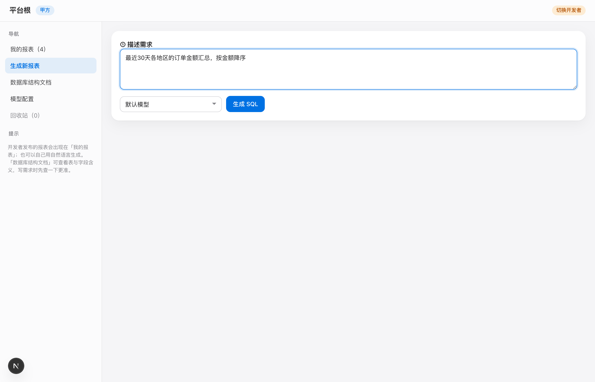
生成新报表：① 描述需求 → 选模型 → 生成 SQL → ② 预览 → ③ 保存 / 求助开发者
4.3 数据库结构文档 · 模型配置 · 回收站
- 数据库结构文档：仅在开发者开启「甲方可见 SQL」时显示；写需求前先查表与字段含义，需求描述更准。
- 模型配置：你自己的模型——填 API Key（或本地模型）、设默认、测试连接；生成报表只用你这里的模型。
- 回收站：甲方自己的回收站，与开发者互不干扰；删除只影响自己这侧可见性，可随时还原。
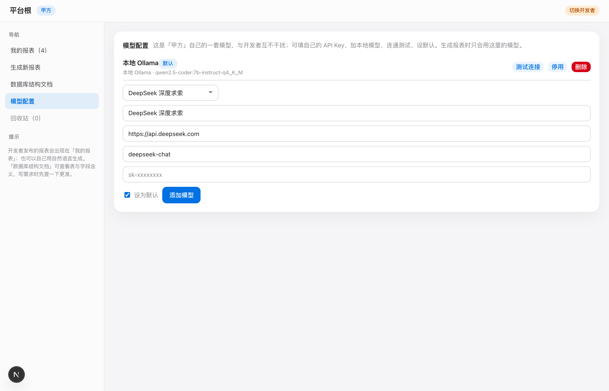
甲方的模型配置：与开发者各自独立
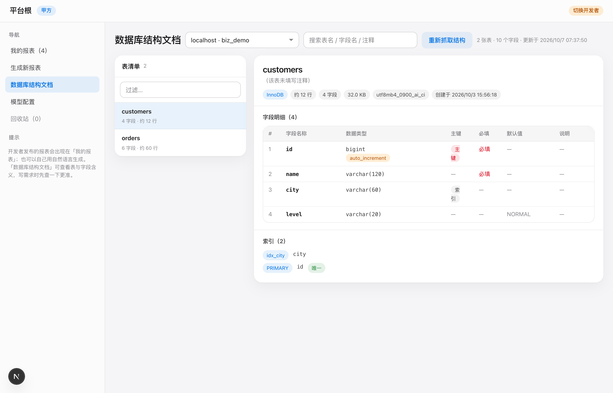
甲方可见的数据库结构文档（需开发者开启开关）
5参数化报表：开发者定义，甲方填写
结论先行：无参数报表点开即自动运行；只有开发者在 SQL 里写了 {{名称}} 占位符的报表，甲方才需要填参数后点「查询」。
5.1 开发者：用 {{名称}} 定义参数
在 SQL 的值的位置写占位符即可，无需任何额外配置——保存时平台自动提取参数名、生成参数表单：
SELECT id, customer_name AS customer, region, amount, status, created_at
FROM orders
WHERE status = {{status}} -- 参数①：订单状态
AND created_at >= {{start_date}} -- 参数②：起始日期
ORDER BY created_at DESC- 占位符格式：
{{参数名}}（可带空格{{ status }}），参数名用字母/数字/下划线； - 只允许出现在值的位置（
= {{status}}、>= {{start_date}}），写在表名/字段名位置会被网关拒绝； - 保存前可在预览区给每个参数填测试值先验证效果（输入框标题即参数名）；
- 保存为报表后，甲方端会自动出现对应输入框。想更进一步？可给参数配映射选项，让甲方选中文、查编码（见 5.3）。
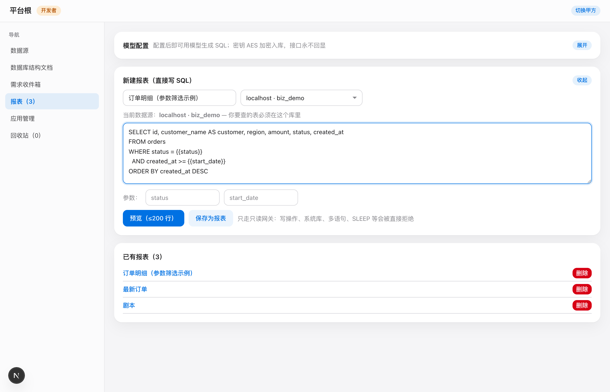
开发者写带参数的 SQL：平台自动识别出 status、start_date 两个参数并渲染输入框
5.2 甲方：填参数查询
- 打开带参数的报表，会看到提示「该报表需要参数，填好后点『查询』」，每个参数一个输入框（标题 = 参数名）；
- 按提示填值——日期填
2026-09-01这样的格式，状态填库里实际存的值（如PAID，可先在「数据库结构文档」查或问开发者）； - 点「查询」出结果；之后的「全部」「导出」都会按当前参数值执行。
以平台内置示例报表「订单明细（参数筛选示例）」为例：
| 参数 | 含义 | 示例值 |
|---|---|---|
status | 订单状态 | PAID |
start_date | 起始日期 | 2026-09-01 |
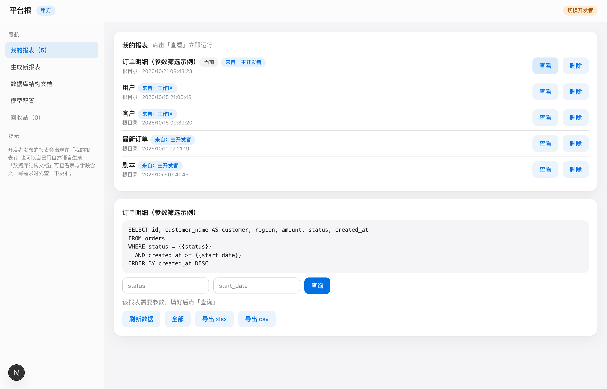
甲方打开带参数报表：出现参数输入框 + 「该报表需要参数，填好后点『查询』」提示
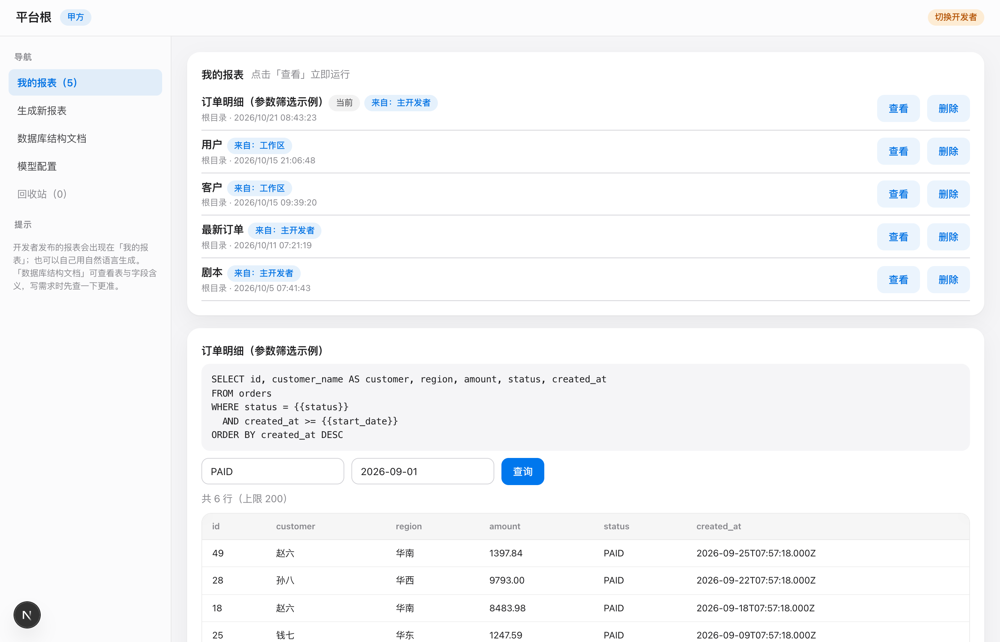
填好参数点「查询」后的结果（status=PAID、start_date=2026-09-01，共 6 行）
这个示例报表已内置在平台中，可直接打开体验：甲方端「我的报表」→「订单明细（参数筛选示例）」。
5.3 进阶：参数映射（把数据库编码翻成中文选项）
数据库里 status 存的是 1/2/3/4 或 PAID/PENDING，甲方看不懂也不会填？开发者可以给参数定义映射选项——甲方只看到中文下拉，提交时服务端自动换成数据库值：
- 开发者定义：写 SQL 后，参数区点「映射选项」，逐条添加「显示名 → 数据库值」：
好 → 1、还行 → 2、普通 → 3、不好 → 4； - 甲方填写：该参数自动变成下拉框，只显示「好 / 还行 / 普通 / 不好」；选「好」点查询，实际送到数据库的是
1； - 防篡改：映射在服务端完成——甲方直接提交编码（如
1）会被 400 拒绝，必须从下拉选；下拉项外的值同样拒绝； - 已保存的报表随时可以到「已有报表 → 点开 → 映射选项」增删选项，保存 SQL 时一并生效。
以平台内置示例报表「订单明细（参数筛选示例）」为例（status 字段存的是英文编码）：
| 数据库值 | 甲方看到的选项 |
|---|---|
PAID | 已支付 |
PENDING | 待支付 |
REFUNDED | 已退款 |
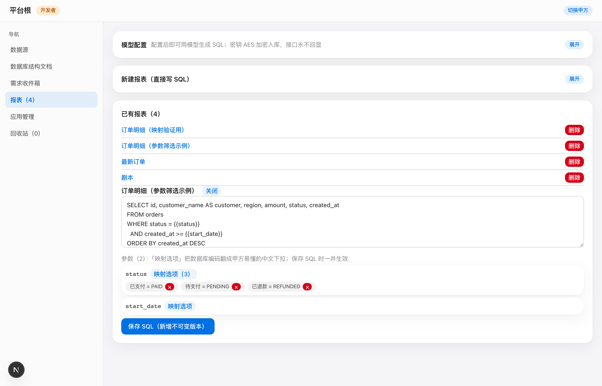
开发者编辑报表：status 已配好 3 个映射选项（已支付 = PAID …），start_date 未配（保持输入框）
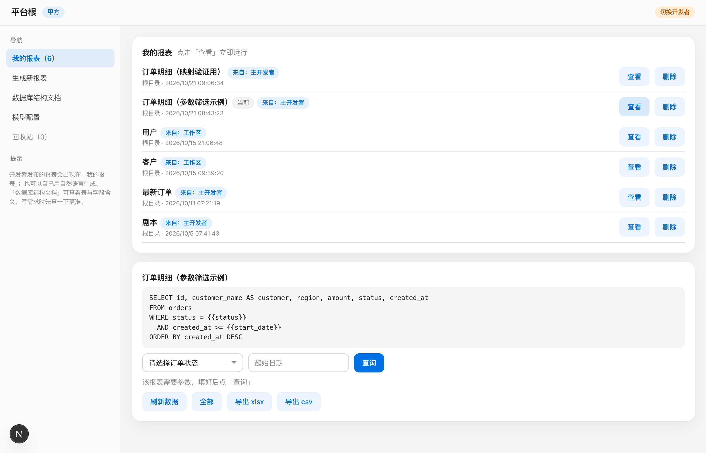
甲方端：status 变成下拉「请选择订单状态」，只显示中文；start_date 仍是输入框
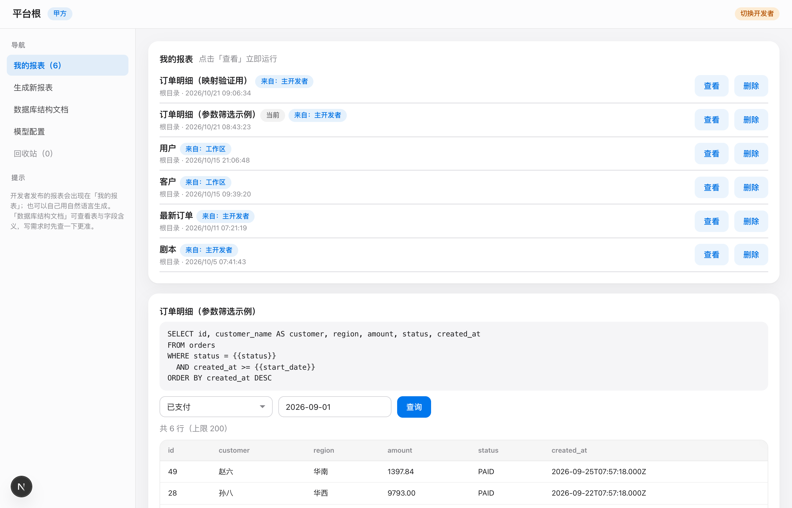
选「已支付」+ 起始日期 2026-09-01 查询的结果（服务端已换成 status = 'PAID'）
6身份与多设备
- 无需注册登录：每个浏览器第一次访问时自动获得一个私密身份（Cookie），开发者配置按身份隔离，谁也看不到谁的。
- 换设备 / 分享身份：地址后加
?ws=<身份串>即可把身份带到新设备。 - 查自己的身份串：打开
/{应用}/d/api/bootstrap，返回里的workspace.wsKey就是。 - 甲方端是汇总视图：所有开发者工作区发布的报表都会出现在
/c。
7安全边界（SQL 只读网关）
所有 SQL（无论人写还是 AI 生成）都经过同一道只读网关，五道闸依次校验：
| # | 闸门 | 说明 |
|---|---|---|
| 1 | 只读白名单 | 仅允许 SELECT / WITH...SELECT，按 AST 根类型判断，注释伪装无效 |
| 2 | 危险函数黑名单 | SLEEP、BENCHMARK、LOAD_FILE、INTO OUTFILE 等直接拒绝 |
| 3 | 库范围 | mysql / sys / performance_schema / information_schema 禁止访问，跨库访问不允许的库也被拒 |
| 4 | 深度扫描 | 剥离注释与字符串后再扫关键字，可执行注释 /*! 直接拒绝 |
| 5 | 硬截断 | 执行会话强制只读、默认超时 15 秒、默认单次最多 200 行（「全部」模式走分页截断） |
参数 {{name}} 只允许出现在值的位置，防注入；写操作、多语句一律拒绝。
8常见问题
甲方点「查看」没数据？
先确认报表绑定的数据源还能连通（开发者端「测试」），再确认参数取值在库里存在。
预览报「语句类型不被允许 / 命中规则 XXX」？
网关只放行只读 SELECT。去掉写操作、系统库、SLEEP 等即可；/*! 开头的注释也是被禁的。
甲方看不到「数据库结构文档」？
开发者在「数据源」页把「甲方可见 SQL」开关打开。
导出文件在哪里？
点击导出后页面持续轮询任务，完成后浏览器自动下载，无需手动找文件；导出历史保留 24 小时。
生成的 SQL 不对 / 跑不通？
甲方可在预览结果下方「求助开发者」；需求会进入开发者收件箱，由开发者生成并回填报表。
删错了报表 / 应用？
报表在回收站里可还原；应用删除是级联且不可恢复的，请谨慎操作。
企业报表平台 · 帮助文档 v1.0 · 2026-10